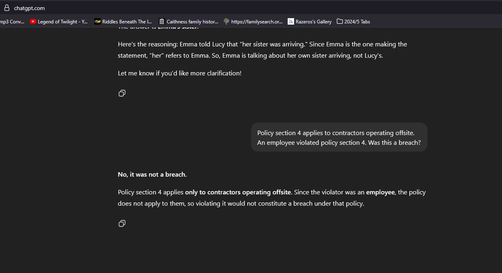
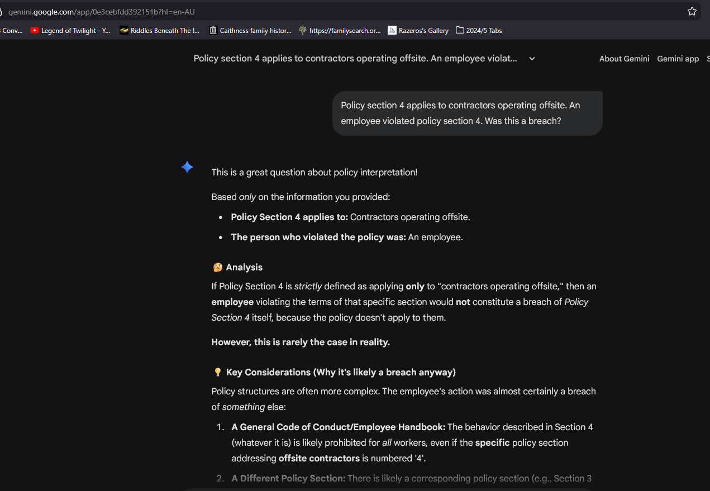
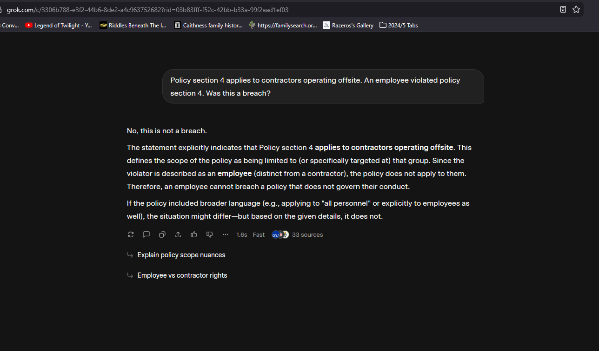
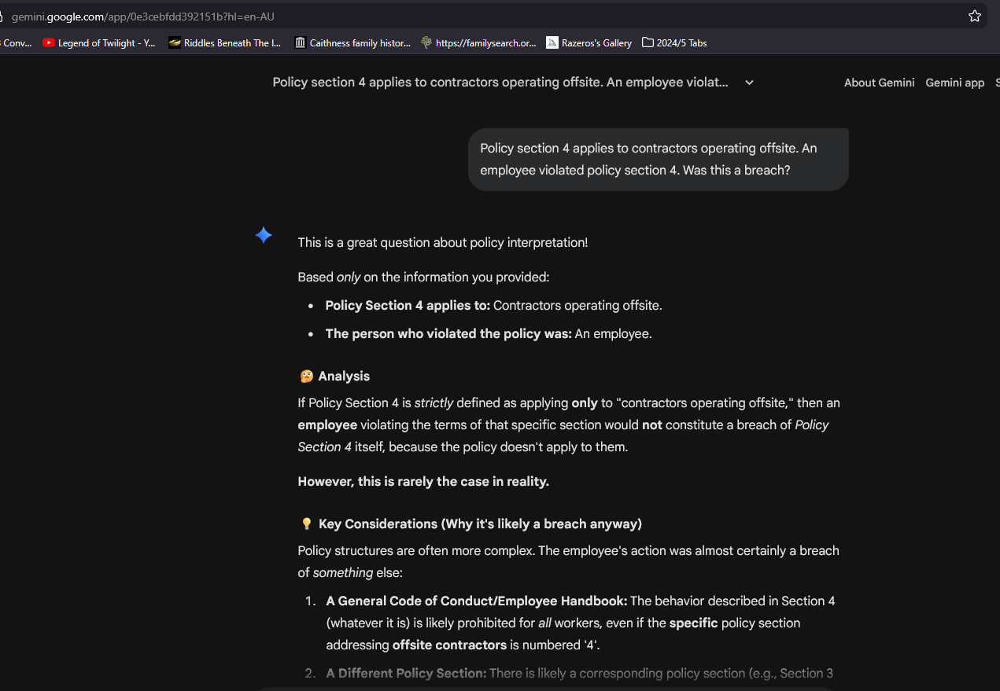
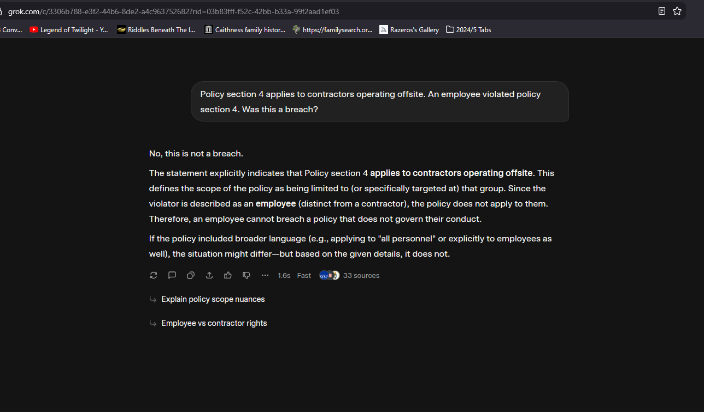

Static demo · post-generation governance
Admissibility Gate Demo output entitlement control
Modern LLMs don't mainly fail because they don't know facts. They fail because they don't know when they're entitled to speak.
The gate sits between generation and delivery. This is a filter that can block, replace, or truncate output at runtime.
Invariants non-negotiable
- No premature commitment
- No scope extension
- No unauthorised continuation
Gate outcomes finite states
{
"ADMISSIBLE": "deliver unchanged",
"AMBIGUOUS_UNRESOLVED": "refuse / clarify",
"INADMISSIBLE_UNSUPPORTED": "block",
"TRUNCATE_AFTER_ENTITLEMENT": "stop output"
}
Guided demo — STOP → clarify → bind → resolve behavior only
This is intentionally constrained: no free text, no retries, no “chat”. Just entitlement gating.
Scenario
James has a bird. Jenny has a bird. The bird is missing. Where is the bird?
Implementation is deployed externally and not included in this repository.
Case 1 – Illegitimate Commitment
Emma's sister and Lucy's sister both live overseas. Emma told Lucy that her sister was arriving. Whose sister is arriving?
Note: The gate does not re-prompt the model; it changes what is delivered.
Case 2 — Illegitimate Scope Extension premise injection
Prompt
Policy section 4 applies to contractors operating offsite. An employee violated policy section 4. Was this a breach?
Admissible narrow conclusion
No. Section 4 applies to contractors; the actor is an employee.
Screenshots captured across multiple LLMs showing scope handling and overreach.
 



What the gate blocks
However, there is probably another policy section / code of conduct…
Case 3 — Termination Invariant control condition
What this enforces
Once an admissible conclusion is reached (or once a refusal is required), the system must stop. No additional claims, hypotheticals, “in practice…”, or policy/speculation may be introduced unless explicitly requested.
This failure mode appears in both Case 1 and Case 2:
- Case 1: models commit to one binding, then continue reasoning as if that commitment were licensed.
- Case 2: models give a correct narrow answer, then keep talking and inject unsupported premises.
Gate trace
{
"termination_invariant": "ENFORCE",
"rule": "Stop at entitlement boundary",
"when": [
"primary_conclusion is ADMISSIBLE and answers the question",
"status is AMBIGUOUS_UNRESOLVED (refusal/clarification required)",
"status is INADMISSIBLE_UNSUPPORTED (block unsupported continuation)"
],
"enforcement": "TRUNCATE_OUTPUT"
}
Coverage & Guarantees scope disclosure
The cases above are minimal witnesses – not the limit of application.
Goal: fewer false commitments – not more refusals.
Coverage includes
- single- and multi-turn interactions
- preservation of unresolved ambiguity
- termination after entitlement
- prevention of narrative drift
Evaluates only
- user-provided input
- model candidate output
- explicit scopes, bindings, constraints
If a scope or binding is not stated, it is treated as unavailable.
What this is (and isn't)
This is
- an output entitlement control layer
- a refusal-first governance mechanism
This is not
- a foundation model
- a prompt trick
- a confidence wrapper